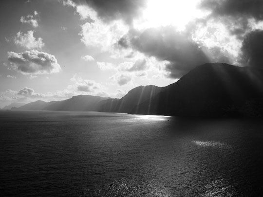

Schoenfeld's Website
Tomorrow,
and tomorrow, creeps in this petty pace from day to day, to the last
syllable of recorced time; and all our yesterdays have lighted fools
the way to dusty death. Out, out, brief candle! Life's but a walking
shadow; a poor player, that struts and frets his hour upon the stage
and then is heard no more. It is a tale told by an idiot, full of sound
and fury, signifying nothing.